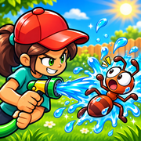

Backyard DefenderPrivacy Policy
Last updated: November 26, 2026
Backyard Defender ("the game") is made by Shawn Williams, publishing as Willo Games ("we", "us"). This policy explains what information the game uses and why. The short version: we don't ask for, collect or store your personal information. The game shows optional video ads from Google AdMob, and this policy explains what Google collects to show them.
Information we collect
None. The game has no accounts, sign-ins, chat or messaging, and it never asks for your name, email, age, photos, contacts or location. Your progress (acorns, upgrades, unlocked kids and yards, best times and settings) is saved only on your own device and is not sent to us.
Ads
The iPhone version of the game offers optional rewarded video ads. You choose to watch one in exchange for an in-game bonus, such as new level-up choices, a revive or double acorns. These ads are provided by Google AdMob. To keep the game family-friendly, we have set AdMob to:
- show only ads rated for general audiences (G);
- show non-personalized ads, meaning ads are not targeted using a profile of your interests; and
- not ask for permission to track you across other companies' apps and websites. The game does not use Apple's Advertising Identifier for tracking.
To deliver ads, measure them, limit how often you see the same ad, and prevent fraud, Google's software may collect technical information from your device. This includes your IP address (which can indicate your approximate location), device and app information, ad interactions such as views and taps, and diagnostic and performance data. Google handles this information under its own privacy policy: policies.google.com/privacy. To learn how Google uses information from apps that use its services, see policies.google.com/technologies/partner-sites.
If you are in the European Economic Area, the UK or Switzerland, the game shows Google's consent form before showing ads, so you can make your choices. You can change them at any time.
Web version
If you play Backyard Defender on a website such as itch.io or CrazyGames, that website may show its own ads and collect information under its own privacy policy. Progress in the web version is saved in your browser, or by the website's own save system.
Children
Backyard Defender is a family-friendly game for a general audience. It is not directed primarily at children under 13, and we do not knowingly collect personal information from anyone, including children. Ads are limited to G-rated, non-personalized ads, and they only play when a player chooses to watch one. If you believe a child has given us personal information, contact us and we will help.
Your choices
- Ads are optional. You can play the whole game without watching any.
- You can delete all your game data by deleting the app.
- On iPhone, you can also manage ad and tracking settings in Settings → Privacy & Security.
Changes
If we change this policy, we will update the date at the top of this page.
Contact
Questions about this policy? Email shawn@imakeugc.com.